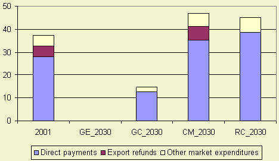

EU CAP expenditures reduced in global scenarios (Global Economy (A1)
and Global Cooperation (Global Cooperation)). In the regionalization scenarios (Continental
Markets (A2) en Regional Communities (B2) CAP expenditures will increase due
to enlargement. Expenditures are highest in the Continental Markets (A2) as
export subsidies are maintained.

Figure 1- EU expenses in billions of euros
Explanation
The current CAP expenditures are about 37 billion euro (without rural area payments).
In 2030 these expenditures will be zero in the Global Economy (A1) scenario because there
is full trade liberalisation and abolishment of all domestic support. In the
Global Cooperation (B1) scenario payments are reduced to almost 15 billion euro because all
export subsidies will be abolished and only 37.5% of domestic support is sustained.
In the Continental Markets (A2) scenario CAP expenditures will be highest (47
billion euro) due to accession and export subsidies (refunds) are kept. In the
Regional Communities (B2) scenario CAP expenditures are lower than in the Continental
markets (A2) scenario because export refunds are abolished. Direct payments
are higher in the Regional Communities (B2) scenario than the Continental markets
(A2) scenario because these payments increase with 10%.